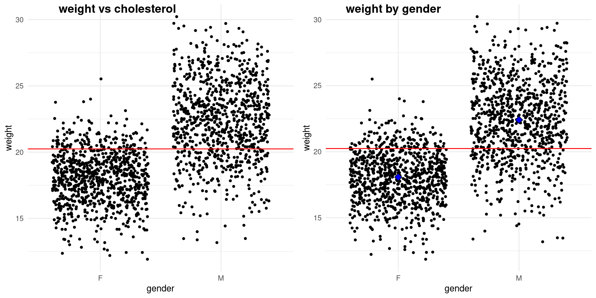
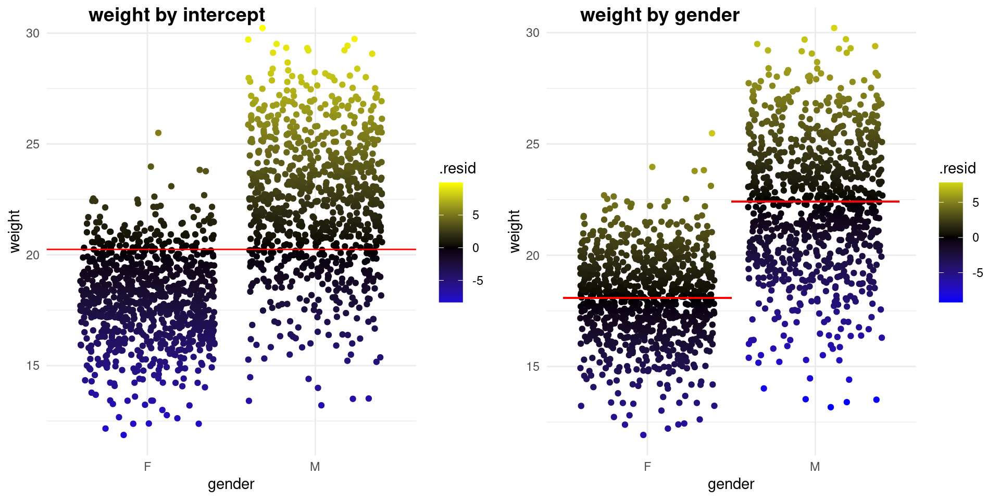
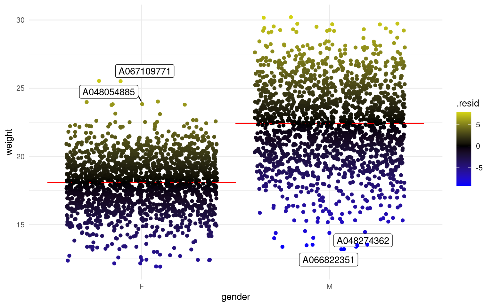
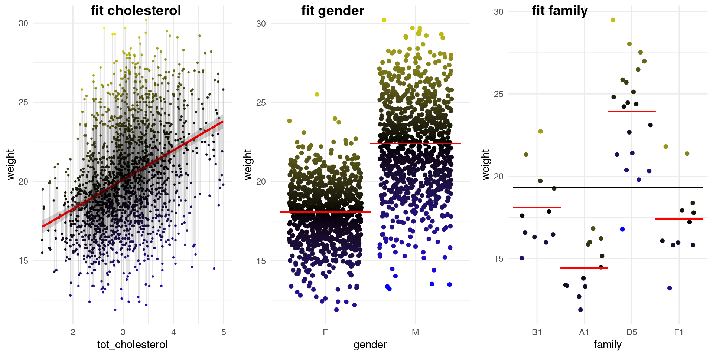
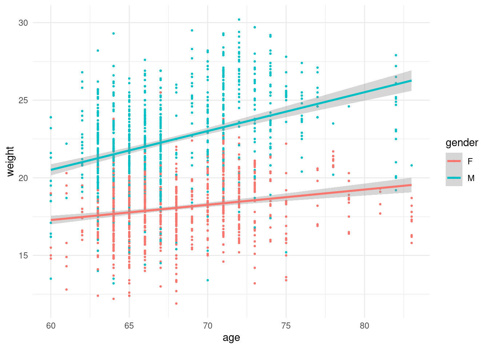

| Info | Parametric | Non-Parametric |
|---|---|---|
| better descriptor | mean | median |
| # of samples (N) | many | few |
Bootcamp: Stats class 4
Learning Objectives
- Visualize and Summarize the data being compared
- Formulate and Execute null hypothesis testing
- Identify and Perform the proper statistical test for data type/comparison
- Calculate and Interpret p-values
- Prevent p-hacking and Recognize issues with simultaneously testing multiple hypotheses.
Outline
- Concepts and Definitions
- Simplifying principles: Common tests as linear models
- Types of comparisons and statistical tests
- Definitions
- Day 1: Relationship between two or more continuous variables
- Correlation vs Regression
- Fitting it a line to data
- Linear regression concepts
- Multiple regression
- Day 2: Relationship between categorical and continuous variables
Comparing means between two groups (t-Test)
Comparing means between 3 or more groups (ANOVA)
- Day 3: Multiple test correction, Bayesian intro, History
Provide a simple and flexible framework

CHEATSHEET

Variables definitions
Random variables (x, y)
Response Variable ( y - aka dependent or outcome variable): this variable is predicted or its variation is explained by the explanatory variable. In an experiment, this is the outcome that is measured following manipulation of the explanatory variable.
Explanatory Variable ( x - aka independent or predictor variable): explains variations in the response variable. In an experiment, it is manipulated by the researcher.
Quantitative Variables
Discrete variable: numeric variables that have a countable number of values between any two values - integer in R (e.g., number of mice, read counts).
Continuous variable: numeric variables that have an infinite number of values between any two values - numeric in R (e.g., normalized expression values, fluorescent intensity).
Categorical Variables
Nominal variable: (unordered) random variables have categories where order doesn’t matter - factor in R (e.g., country, type of gene, genotype).
Ordinal variable: (ordered) random variables have ordered categories - order of levels in R ( e.g. grade of tumor).
Hypothesis testing definitions
Hypothesis testing is a statistical analysis that uses sample data to assess two mutually exclusive theories about the properties of a population. Statisticians call these theories the null hypothesis and the alternative hypothesis. A hypothesis test assesses your sample statistic and factors in an estimate of the sample error to determine which hypothesis the data support.
When you can reject the null hypothesis, the results are statistically significant, and your data support the theory that an effect exists at the population level.
A legal analogy: Guilty or not guilty?
The statistical concept of ‘significant’ vs. ‘not significant’ can be understood by comparing to the legal concept of ‘guilty’ vs. ‘not guilty’.
In the American legal system (and much of the world) a criminal defendant is presumed innocent until proven guilty. If the evidence proves the defendant guilty beyond a reasonable doubt, the verdict is ‘guilty’. Otherwise the verdict is ‘not guilty’. In some countries, this verdict is ‘not proven’, which is a better description. A ‘not guilty’ verdict does not mean the judge or jury concluded that the defendant is innocent -- it just means that the evidence was not strong enough to persuade the judge or jury that the defendant was guilty.
In statistical hypothesis testing, you start with the null hypothesis (usually that there is no difference between groups). If the evidence produces a small enough P value, you reject that null hypothesis, and conclude that the difference is real. If the P value is higher than your threshold (usually 0.05), you don’t reject the null hypothesis. This doesn’t mean the evidence convinced you that the treatment had no effect, only that the evidence was not persuasive enough to convince you that there is an effect.
Effect — the difference between the population value and the null hypothesis value. The effect is also known as population effect or the difference. Typically, you do not know the size of the actual effect. However, you can use a hypothesis test to help you determine whether an effect exists and to estimate its size.
Null Hypothesis or \(\mathcal{H}_0\) — one of two mutually exclusive theories about the properties of the population in hypothesis testing. Typically, the null hypothesis states that there is no effect (i.e., the effect size equals zero).
Alternative Hypothesis or \(\mathcal{H}_1\) — the other theory about the properties of the population in hypothesis testing. Typically, the alternative hypothesis states that a population parameter does not equal the null hypothesis value. In other words, there is a non-zero effect. If your sample contains sufficient evidence, you can reject the null and favor the alternative hypothesis.
P-values — the probability of obtaining test results at least as extreme as the results actually observed, under the assumption that the null hypothesis is correct. Lower p-values represent stronger evidence against the null. P-values in conjunction with the significance level determines whether your data favor the null or alternative hypothesis.
StatQuest: P Values, clearly explained
StatQuest: How to calculate p-values
Significance Level or \(a\) — an evidentiary standard set before the study. It is the probability that you say there is an effect when there is no effect (the probability of rejecting the null hypothesis given that it is true). Lower significance levels indicate that you require stronger evidence before you will reject the null.It is usually set at or below .05.

Null hypothesis testing
- Specify the variables
- Declare null hypothesis \(\mathcal{H}_0\)
- Calculate test-statistic, exact p-value
- Generate and visualize data reflecting null-distribution
- Calculate the p-value from the test statistic and null distribution
*4-5: For calculating empirical p-value
The simplicity underlying common tests
Most of the common statistical models (t-test, correlation, ANOVA; chi-square, etc.) are special cases of linear models or a very close approximation. This simplicity means that there is less to learn. In particular, it all comes down to:
\(y = a \cdot x + b\)
This needless complexity multiplies when students try to rote learn the parametric assumptions underlying each test separately rather than deducing them from the linear model.
Parametric vs Non-Parametric tests
Parametric tests are suitable for normally distributed data.
Non-Parametric tests are suitable for any continuous data. For the sake of simplicity and sticking with a consistent framework, we will consider Non-Parametric tests as the ranked versions of the corresponding parametric tests.
More on choosing Parametric vs Non-Parametric
Import and tidy data
We will be using mouse data from Resources for Outbred Mice. The goal of the study was to establish genotype-phenotype relationships for highly recombinant outbred mouse populations. We will be using the phenotypic data for our exercises.
# we are reading the data directly from the internet
biochem <- read_tsv("http://mtweb.cs.ucl.ac.uk/HSMICE/PHENOTYPES/Biochemistry.txt", show_col_types = FALSE) %>%
janitor::clean_names()Warning in FUN(X[[i]], ...): unable to translate '<U+00C4>' to native encodingWarning in FUN(X[[i]], ...): unable to translate '<U+00D6>' to native encodingWarning in FUN(X[[i]], ...): unable to translate '<U+00DC>' to native encodingWarning in FUN(X[[i]], ...): unable to translate '<U+00E4>' to native encodingWarning in FUN(X[[i]], ...): unable to translate '<U+00F6>' to native encodingWarning in FUN(X[[i]], ...): unable to translate '<U+00FC>' to native encodingWarning in FUN(X[[i]], ...): unable to translate '<U+00DF>' to native encodingWarning in FUN(X[[i]], ...): unable to translate '<U+00C6>' to native encodingWarning in FUN(X[[i]], ...): unable to translate '<U+00E6>' to native encodingWarning in FUN(X[[i]], ...): unable to translate '<U+00D8>' to native encodingWarning in FUN(X[[i]], ...): unable to translate '<U+00F8>' to native encodingWarning in FUN(X[[i]], ...): unable to translate '<U+00C5>' to native encodingWarning in FUN(X[[i]], ...): unable to translate '<U+00E5>' to native encoding# simplify names a bit more
colnames(biochem) <- gsub(pattern = "biochem_", replacement = "", colnames(biochem))
# we are going to simplify this a bit and only keep some columns
keep <- colnames(biochem)[c(1, 6, 9, 14, 15, 24:28)]
biochem <- biochem[, keep]
# get weights for each individual mouse
# careful: did not come with column names
weight <- read_tsv("http://mtweb.cs.ucl.ac.uk/HSMICE/PHENOTYPES/weight", col_names = F, show_col_types = FALSE)
# add column names
colnames(weight) <- c("subject_name", "weight")
# add weight to biochem table and get rid of NAs
biochem <- inner_join(biochem, weight, by = "subject_name") %>%
na.omit()
# explore the data a bit
# colnames(biochem)
# str(biochem)
# View(biochem)Review linear regression from yesterday
Equation for a line (Stats version)
Model: the recipe for \(y\) is a slope (\(\beta_1\)) times \(x\) plus an intercept (\(\beta_0\), aka a straight line).
\(y = \beta_0 \cdot 1 + \beta_1 \cdot x \qquad \mathcal{H}_0: \beta_1 = 0 \qquad y = \beta_0 \cdot 1\)
\(y = \beta_0 \cdot 1 + \beta_1 \cdot x \qquad \mathcal{H}_0: \beta_1 \neq 0\)
Find the best \(\beta\) coefficients
These \(\beta\) coefficients are also called the paramters of the model. The \(\beta\) coefficients returned are for the lineear model that best fits the data.
Specify variables and hypothesis
Remember: \(y = \beta_0 \cdot 1+ \beta_1 \cdot x\)
Null Hypothesis: \(\mathcal{H}_0: \beta_1 = 0\)
\(\mathcal{H}_0:\) mouse \(cholesterol\) does NOT explain \(weight\)
Alternative Hypothesis: \(\mathcal{H}_1: \beta_1 \neq 0\)
Simple model: \(y = \beta_0 \cdot 1 + \beta_1 \cdot x\)
\(\mathcal{H}_1:\) mouse \(cholesterol\) does explain \(weight\)
Relationship between mouse weight and cholesterol
# fitting a line weight vs intercept (mean weight)
fit_W <- lm(formula = weight ~ 1, data = biochem)
# augment data to add fit/residuals
biochem_W <- augment(fit_W, data = biochem)
# plot data
p_wch <- ggplot(data = biochem, aes(y = weight, x = tot_cholesterol)) +
geom_point(size = .5) +
geom_smooth(method = lm, col = "red") +
scale_color_manual() +
theme_minimal()
p_WvInt_res <- ggplot(data = biochem_W, aes(x = tot_cholesterol, y = weight)) +
geom_hline(yintercept = biochem_W$.fitted, col = "red", size = .5) + # plot linear model fit
geom_point(size = .5, aes(color = .resid)) + # plot height as points and color code by the value of the residual
scale_color_gradient2(low = "blue", mid = "black", high = "yellow") + # color code for plotting residuals
geom_segment(aes(xend = tot_cholesterol, yend = .fitted), alpha = .25) + # plot line representing residuals
theme_minimal()Warning: Using `size` aesthetic for lines was deprecated in ggplot2 3.4.0.
i Please use `linewidth` instead.# fitting a line weight vs icholesterol
fit_WvC <- lm(
data = biochem,
formula = weight ~ 1 + tot_cholesterol
)
# augment data to add fit/residuals
biochem_WvC <- augment(fit_WvC, data = biochem)
# plot data
p_WvC_res <- ggplot(data = biochem_WvC, aes(x = tot_cholesterol, y = weight)) +
geom_point(size = .5, aes(color = .resid)) +
geom_smooth(method = lm, col = "red") +
scale_color_gradient2(low = "blue", mid = "black", high = "yellow") + # color code
geom_segment(aes(xend = tot_cholesterol, yend = .fitted), alpha = .1) + # plot line representing residuals
theme_minimal()
biochem_WvC_rsq <- fit_WvC %>%
glance() %>%
pull(r.squared)
biochem_WvC_pval <- fit_WvC %>%
glance() %>%
pull(p.value)plot_grid(p_WvInt_res, p_WvC_res, ncol = 2, labels = c("weight by intercept", "weight by cholesterol"))`geom_smooth()` using formula = 'y ~ x'
To what extent does mouse cholesterol predict mouse weight?
\(R^2\) or coefficient of determination — the proportion of the variance in the dependent variable that is predictable from the independent variable(s).
13%
Probability that relationship is due to chance?
\(p-value\) — the probability of obtaining an \(F-statistic\) in the null distribution at least as extreme as our observed \(F-statistic\).
8.9241551^{-54}
Comparing means between two groups (Student’s t-test)
The T-Distribution, also known as Student’s t-distribution, gets its name from William Sealy Gosset who first published it in English in 1908 in the scientific journal Biometrika using his pseudonym “Student”[9][10] because his employer preferred staff to use pen names when publishing scientific papers instead of their real name, so he used the name “Student” to hide his identity.[11]
The Curious Tale of William Sealy Gosset
Guinness Brewery in Dublin


We will compare mouse \(weight\) by \(gender\).

Specify variables and hypothesis
Model: \(y_{i} = \beta_0 \cdot 1+ \beta_1 \cdot x_{i}\)
Null Hypothesis: \(\mathcal{H}_0: \beta_1 = 0\)
\(\mathcal{H}_0:\) mouse \(gender\) does NOT explain \(weight\)
Alternative Hypothesis: \(\mathcal{H}_1: \beta_1 \neq 0\)
\(\mathcal{H}_1:\) mouse \(gender\) does explain \(weight\)
Important: \(x_{i}\) is an indicator (0 or 1) saying whether data point i was sampled from one or the other group (female or male).
We will explore this in more detail soon.
1. Calculate \(SS_{mean}\) for weight by gender (female vs male)
Compare \(SS_{mean}\) for weight by cholesterol versus weight by gender
\(SS_{mean}\) — sum of squares around the overall mean of \(y\)
\(SS_{mean} = \sum_{i=1}^{n} (data - mean)^2\)
\(SS_{mean} = \sum_{i=1}^{n} (y_{i} - \overline{y})^2\)
Residuals, \(e\) — the difference between the observed value of the dependent variable \(y\) and the predicted value \(\widehat{y}\) is called the residual. Each data point has one residual.
\(e = y_{i} - \widehat{y}\)
Class exercise 1:
Which of these are valid ways to calculate \(SS_{mean}\) from biochem_W?
# A. sum((biochem_W$weight - biochem_W$.fitted)^2)
# B. sum((biochem_W$weight - biochem_W$.resid)^2)
# C. sum(biochem_W$.resid^2)
# D. sum((biochem_W$weight - mean(biochem_W$weight))^2)2. Calculate \(SS_{fit}\) for weight by gender
Compare \(SS_{fit}\) vs \(SS_{fit}\) weight by gender
# fitting a line weight vs intercept + gender
fit_WvG <- lm(formula = weight ~ 1 + gender, data = biochem)
# augment (i.e. add fitted and residual values)
biochem_WvG <- augment(fit_WvG, data = biochem)
# plot of data with mean and colored by residuals
p_WvG_res <- ggplot(biochem_WvG, aes(x = gender, y = weight)) +
geom_point(position = position_jitter(), aes(color = .resid)) +
scale_color_gradient2(low = "blue", mid = "black", high = "yellow") + # color code for plotting residuals
geom_segment(aes(x = .5, xend = 1.5, y = fit_WvG$coefficients[1], yend = fit_WvG$coefficients[1]), color = "red") +
geom_segment(aes(x = 1.5, xend = 2.5, y = sum(fit_WvG$coefficients)), yend = sum(fit_WvG$coefficients), color = "red") +
theme_minimal()
NOTE: We are fitting 2 lines to the data
For the weight by intercept model (right) we fit 1 line.
For the weight by gender model (left) we fit 2 lines (i.e. male and female).
Exceptions to the fit
Check the residuals!
Matrices Interlude Begin
How do we go from 2 fit lines to 1 equation
Since we don’t want to calculate any of this by hand, the framework needs to be flexible such that a computer can execute for different flavors of comparison (cont y vs cont x, cont y vs 2 or more categorical x, …).
Let’s break this down and focus on just a few players.
p_exc
# ggplot(data = biochem_WvG, aes(.resid, color=gender)) +
# geom_density() +
# theme_minimal()Remember that:
\(weight\) is \(y\)
\(F_{avg}\) is the average \(weight\) of \(females\)
\(M_{avg}\) is the average \(weight\) of \(males\)
A048054885, female
\(y_{85}= 0 \cdot F_{avg} + 1 \cdot M_{avg} + residual_{85}\)
A067109771, female
\(y_{71}= 0 \cdot F_{avg} + 1 \cdot M_{avg} + residual_{71}\)
A066822351, male
\(y_{51}= 0 \cdot F_{avg} + 1 \cdot M_{avg} + residual_{51}\)
A048274362, male
\(y_{62}= 0 \cdot F_{avg} + 1 \cdot M_{avg} + residual_{62}\)
Need a volunteer
Me: Ooohh my, imagine how tedious it would be to do this for all 1782 mice…
Volunteer: Wait a sec…isn’t there a way to formulate this as a matrix algebra problem.
Me: You’re right - I’m so glad you asked! Let’s wield our matrix-magic at this problem and see what happens.
\(f_{avg} = \beta_0\) is the average \(weight\) of \(female\) mice
\(m_{avg} = \beta_1\) is the average \(weight\) of \(male\) mice
\(\begin{bmatrix} y_{85} \\ y_{71} \\ y_{51} \\y_{62} \end{bmatrix} = \begin{bmatrix} 0 & 1 \\ 1 & 0 \\ 0 & 1 \\ 0 & 1 \end{bmatrix} \cdot \begin{bmatrix} \beta_0 \\ \beta_1 \end{bmatrix} + \begin{bmatrix} e_{85} \\ e_{71} \\ e_{51} \\e_{62} \end{bmatrix}\)
So basically this looks like the same equation for fitting a line we’ve been discussing, just w/a few more dimensions :)
This is a conceptual peak into the underbelly of how the \(\beta\) cofficients and least squares is performed using matrix operations (remember linear algebra, maybe?). We will not go any deeper in this course, but if you are interested in learning more I recommend the following resources:
Linear Models Pt.3 - Design Matrices
A Matrix Formulation of the Multiple Regression Model
Matrices Interlude FIN
Class exercise 2:
Which of these are valid ways to calculate \(SS_{mean}\) from biochem_W?
\(SS_{fit}\) — sum of squares around the least-squares fit
\(SS_{fit} = \sum_{i=1}^{n} (data - line)^2\)
Which of these are valid ways to calculate \(SS_{fit}\) from biochem_WvG?
# A. sum(biochem_WvG$.resid^2)
# B. sum((biochem_WvG$weight - biochem_WvG$.resid)^2)
# C. sum((biochem_WvG$weight - biochem_WvG$.fitted)^2)
# D. sum((biochem_WvG$weight - mean(biochem_WvG$weight))^2)
p_WvG_res
3. Calculate \(F-statistic\)
F-statistic — the proportion of the variance in the dependent variable that is predictable from the independent variable(s).
\(F = \displaystyle \frac{SS_{fit}/(p_{fit}-p_{mean})} {SS_{mean}/(n-p_{fit})}\)
\(p_{fit}\) — number of parameters in the fit line
\(p_{mean}\) — number of parameters in the mean line
\(n\) — number of data points
4. Sanity check
# sum of squares of the residuals for the simple model
ss.mean <- sum(biochem_W$.resid^2)
# sum of squares of the residuals for the complex model
ss.fit <- sum(biochem_WvG$.resid^2)
#### COEFFICIENTS NEEL
# number of paramters in simple model
pmean <- 1
# number of paramters in complex model
pfit <- 2
# F-value
biochem_WvG_F <- ((ss.mean - ss.fit) / (pfit - 1)) /
(ss.fit / (nrow(biochem_WvG) - pfit))
biochem_WvG_F[1] 1296.507glance(fit_WvG) %>% pull(statistic) value
1296.507 Let’s take a look at the statistic and p-values:
fit_WvG_stats <- tidy(fit_WvG) %>%
filter(term == "genderM") %>%
select(statistic, p.value)
# to run a t.test in R we need numeric vectors for each of our groups of interest
male_weight_t <- biochem_WvG %>%
filter(gender == "M") %>%
pull(weight)
female_weight_t <- biochem_WvG %>%
filter(gender == "F") %>%
pull(weight)
trad_t <- t.test(male_weight_t, female_weight_t, var.equal = T)
trad_WvG_stats <- tidy(trad_t) %>% select(statistic, p.value)
fit_WvG_stats# A tibble: 1 x 2
statistic p.value
<dbl> <dbl>
1 36.0 9.25e-214trad_WvG_stats# A tibble: 1 x 2
statistic p.value
<dbl> <dbl>
1 36.0 9.25e-214Comparing means of 3 or more?
One-way ANOVA
Let’s compare the \(weight\) by \(family\), but only for a few selected families.
# biochem %>%
# group_by(family) %>%
# count(family) %>%
# arrage(-n) %>%
# View()
bigfams <- biochem %>%
group_by(family) %>%
count(family) %>%
filter(n > 10) %>%
pull(family)
biochem_bigfams <- biochem %>%
filter(family %in% bigfams)
# i have pre-selected some families to compare
myfams <- c(
"B1.5:E1.4(4) B1.5:A1.4(5)",
"F1.3:A1.2(3) F1.3:E2.2(3)",
"A1.3:D1.2(3) A1.3:H1.2(3)",
"D5.4:G2.3(4) D5.4:C4.3(4)"
)
# only keep the familys in myfams
fam_data <- biochem_bigfams %>%
filter(family %in% myfams) %>%
droplevels()
# simplify family names and make factor
fam_data$family <- gsub(
pattern = "\\..*",
replacement = "",
x = fam_data$family
) %>%
as.factor()
# make B1 the reference (most similar to overall mean)
fam_data$family <- relevel(x = fam_data$family, ref = "B1")Model: \(y_{i} = \beta_0 \cdot 1+ \beta_1 \cdot x_{i}\)
Null Hypothesis: \(\mathcal{H}_0: \beta_1 = 0\)
\(\mathcal{H}_0:\) mouse \(family\) does NOT explain \(weight\)
Alternative Hypothesis: \(\mathcal{H}_1: \beta_1 \neq 0\)
\(\mathcal{H}_1:\) mouse \(family\) does explain \(weight\)
Important: \(x_{i}\) is an indicator (0 or 1) saying which group point \(i\) was sampled from using the matrix encoding of 0s and 1s.
Below is an example depicting 6 observations with 2 from each of 3 families:
\(\begin{bmatrix} y_{1} \\ y_{2} \\ y_{3} \\y_{4} \\y_{5} \\y_{5} \end{bmatrix} = \begin{bmatrix} 1 & 0 & 0 \\ 1 & 0 & 0 \\ 0 & 1 & 0 \\ 0 & 1 & 0 \\ 0 & 0 & 1 \\ 0 & 0 & 1 \\ \end{bmatrix} \cdot \begin{bmatrix} \beta_0 \\ \beta_1 \end{bmatrix} + \begin{bmatrix} e_{1} \\ e_{2} \\ e_{3} \\e_{4} \\e_{5} \\e_{6} \end{bmatrix}\)
# fitting a line weight vs intercept + family
fit_WvFam <- lm(formula = weight ~ family, data = fam_data)
# augment (i.e. add fitted and residual values)
biochem_WvFam <- augment(fit_WvFam, fam_data)
mean_B1 <- fit_WvFam$coefficients[1]
mean_A1 <- fit_WvFam$coefficients[1] + fit_WvFam$coefficients[2]
mean_D5 <- fit_WvFam$coefficients[1] + fit_WvFam$coefficients[3]
mean_F1 <- fit_WvFam$coefficients[1] + fit_WvFam$coefficients[4]
# plot of data with mean and colored by residuals
p_WvFam_res <- ggplot(biochem_WvFam, aes(x = family, y = weight)) +
geom_point(position = position_jitter(), aes(color = .resid)) +
geom_segment(aes(x = .5, xend = 1.5, y = mean_B1, yend = mean_B1), color = "red") +
geom_segment(aes(x = 1.5, xend = 2.5, y = mean_A1, yend = mean_A1), color = "red") +
geom_segment(aes(x = 2.5, xend = 3.5, y = mean_D5, yend = mean_D5), color = "red") +
geom_segment(aes(x = 3.5, xend = 4.5, y = mean_F1, yend = mean_F1), color = "red") +
geom_segment(aes(x = .5, xend = 4.5, y = mean(weight), yend = mean(weight)), color = "black") +
scale_color_gradient2(low = "blue", mid = "black", high = "yellow") + # color code for plotting residuals
theme_minimal()
p_WvFam_res
anova_WvFam <- aov(formula = weight ~ family, data = fam_data)
# are the coefficients the same?
bind_cols(tidy(fit_WvFam) %>% select(term, estimate),
ANOVA_coef = anova_WvFam$coefficients
)# A tibble: 4 x 3
term estimate ANOVA_coef
<chr> <dbl> <dbl>
1 (Intercept) 18.1 18.1
2 familyA1 -3.66 -3.66
3 familyD5 5.86 5.86
4 familyF1 -0.682 -0.682glance(fit_WvFam) %>% select(p.value)# A tibble: 1 x 1
p.value
<dbl>
1 7.62e-13tidy(anova_WvFam) %>% select(p.value)# A tibble: 2 x 1
p.value
<dbl>
1 7.62e-13
2 NA Class exercise 3:

What are the \(p_{mean}\) and \(p_{fit}\) for the models above?
| Parameter | fit cholesterol | fit gender | fit family |
|---|---|---|---|
| \(p_{mean}\) | ? | ? | ? |
| \(p_{fit}\) | ? | ? | ? |
Comparing 2 continuouse variables for 2 groups?
ANCOVA, Analysis of Covariance
ANOVA with more than one independent variable. In this case, what is the impact of mouse age on mouse weight for males vs females.
# more info here https://towardsdatascience.com/doing-and-reporting-your-first-anova-and-ancova-in-r-1d820940f2ef
p_WvA_gender <- ggplot(data = biochem, aes(y = weight, x = age, color = gender)) +
geom_point(size = .5) +
geom_smooth(method = lm) +
theme_minimal()
p_WvA_gender`geom_smooth()` using formula = 'y ~ x'
WvA_gender <- lm(formula = weight ~ 1 + age + gender, data = biochem)
WvA_gender %>% glance()# A tibble: 1 x 12
r.squared adj.r.squared sigma statistic p.value df logLik AIC BIC
<dbl> <dbl> <dbl> <dbl> <dbl> <dbl> <dbl> <dbl> <dbl>
1 0.475 0.475 2.42 805. 8.37e-250 2 -4100. 8209. 8231.
# i 3 more variables: deviance <dbl>, df.residual <int>, nobs <int>aov(formula = weight ~ 1 + age + gender, data = biochem) %>% glance()# A tibble: 1 x 6
logLik AIC BIC deviance nobs r.squared
<dbl> <dbl> <dbl> <dbl> <int> <dbl>
1 -4100. 8209. 8231. 10402. 1782 0.475References and resources
I have borrowed heavily from, directly taken, and/or highly recommend the following fantastic resources:
- Common statistical tests are linear models from Jonas Kristoffer Lindel
v
- Statquest
- Stats gobbledygook
- Linear Regression Assumptions and Diagnostics in R: Essentials
- PRINCIPLES OF STATISTICS from GraphPad/SAS.